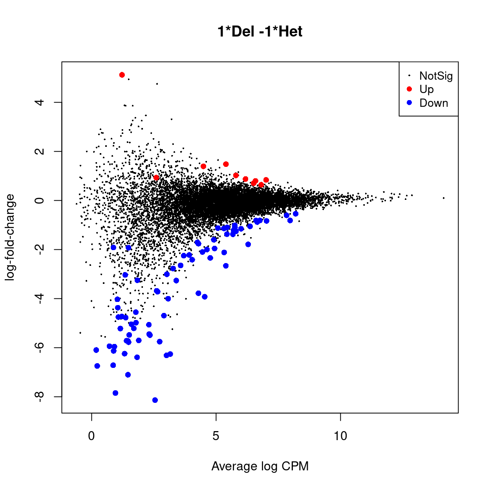
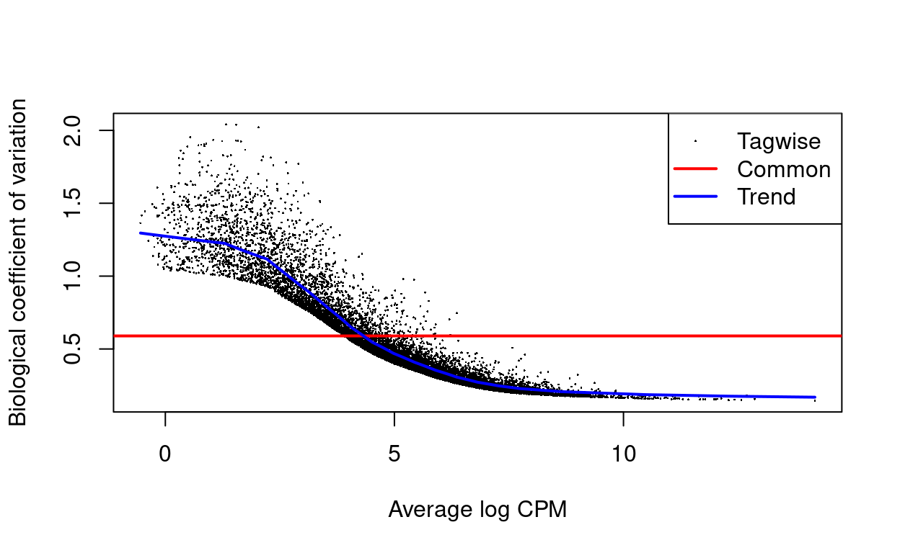

Setup
Summary
- Read counts analysed
- Various analyses denoted by a prefix (
x,y,ym,yf)x:voomLmFit()of individual technical replicates, blocking on mousey:voomLmFit()of aggregated technical repsym: As withybut males onlyyf: As withybut females only
Load data
Show code
library(SingleCellExperiment)
library(here)
library(edgeR)
library(ggplot2)
library(cowplot)
library(patchwork)
library(ggrepel)
source(here("code/helper_functions.R"))
sce <- readRDS(
here("data", "SCEs", "C086_Kinkel.preprocessed.SCE.rds"))
# Some useful colours
sex_colours <- setNames(
unique(sce$sex_colours),
unique(names(sce$sex_colours)))
smchd1_genotype_updated_colours <- setNames(
unique(sce$smchd1_genotype_updated_colours),
unique(names(sce$smchd1_genotype_updated_colours)))
mouse_number_colours <- setNames(
unique(sce$mouse_number_colours),
unique(names(sce$mouse_number_colours)))
Create DGEList objects
Show code
y <- sumTechReps(x, x$samples$genotype.mouse)
ym <- y[, y$samples$sex == "M"]
yf <- y[, y$samples$sex == "F"]
Gene filtering
Show code
x_keep_exprs <- filterByExpr(x, group = x$samples$group)
table(x_keep_exprs)
x_keep_exprs
FALSE TRUE
10124 15462 Show code
x <- x[x_keep_exprs, , keep.lib.sizes = FALSE]
Show code
y_keep_exprs <- filterByExpr(y, group = ym$samples$group)
table(y_keep_exprs)
y_keep_exprs
FALSE TRUE
6634 18952 Show code
y <- y[y_keep_exprs, , keep.lib.sizes = FALSE]
Show code
ym_keep_exprs <- filterByExpr(ym, group = ym$samples$group)
table(ym_keep_exprs)
ym_keep_exprs
FALSE TRUE
8338 17248 Show code
ym <- ym[ym_keep_exprs, , keep.lib.sizes = FALSE]
Show code
yf_keep_exprs <- filterByExpr(yf, group = yf$samples$group)
table(yf_keep_exprs)
yf_keep_exprs
FALSE TRUE
10977 14609 Show code
yf <- yf[yf_keep_exprs, , keep.lib.sizes = FALSE]
Normalization
Show code
x <- calcNormFactors(x, method = "TMM")
y <- calcNormFactors(y, method = "TMM")
ym <- calcNormFactors(ym, method = "TMM")
yf <- calcNormFactors(yf, method = "TMM")
Analysis of individuals tech reps
MDS
Show code
x_mds <- plotMDS(x, plot = FALSE)
x_df <- cbind(data.frame(x = x_mds$x, y = x_mds$y), x$samples)
rownames(x_df) <- colnames(x)
p1 <- ggplot(
aes(x = x, y = y, colour = smchd1_genotype_updated, label = rownames(x_df)),
data = x_df) +
geom_point() +
geom_text_repel(size = 4) +
theme_cowplot(font_size = 8) +
xlab("Leading logFC dim 1") +
ylab("Leading logFC dim 2") +
scale_colour_manual(values = smchd1_genotype_updated_colours)
p2 <- ggplot(
aes(x = x, y = y, colour = sex, label = rownames(x_df)),
data = x_df) +
geom_point() +
geom_text_repel(size = 4) +
theme_cowplot(font_size = 8) +
xlab("Leading logFC dim 1") +
ylab("Leading logFC dim 2") +
scale_colour_manual(values = sex_colours)
p3 <- ggplot(
aes(x = x, y = y, colour = mouse_number, label = rownames(x_df)),
data = x_df) +
geom_point() +
geom_text_repel(size = 4) +
theme_cowplot(font_size = 8) +
xlab("Leading logFC dim 1") +
ylab("Leading logFC dim 2") +
scale_colour_manual(values = mouse_number_colours)
p4 <- ggplot(
aes(x = x, y = y, colour = log10(lib.size), label = rownames(x_df)),
data = x_df) +
geom_point() +
geom_text_repel(size = 4) +
theme_cowplot(font_size = 8) +
scale_colour_viridis_c() +
xlab("Leading logFC dim 1") +
ylab("Leading logFC dim 2")
p5 <- ggplot(
aes(x = log10(lib.size), y = x, colour = log10(lib.size), label = rownames(x_df)),
data = x_df) +
geom_point() +
geom_text_repel(size = 4) +
theme_cowplot(font_size = 8) +
scale_colour_viridis_c() +
ylab("Leading logFC dim 1")
p6 <- ggplot(
aes(x = log10(lib.size), y = y, colour = log10(lib.size), label = rownames(x_df)),
data = x_df) +
geom_point() +
geom_text_repel(size = 4) +
theme_cowplot(font_size = 8) +
scale_colour_viridis_c() +
ylab("Leading logFC dim 2")
p1 + p2 + p3 + p4 + p5 + p6 + plot_layout(ncol = 2)

After excluding outliers
Show code
outliers <- c("Del.1282.2", "Het.1248.2")
- Exclude Del.1282.2, Het.1248.2
Show code
x2 <- x[, setdiff(colnames(x), outliers)]
x2_mds <- plotMDS(x2, plot = FALSE)
x2_df <- cbind(data.frame(x = x2_mds$x, y = x2_mds$y), x2$samples)
rownames(x2_df) <- colnames(x2)
p1 <- ggplot(
aes(x = x, y = y, colour = smchd1_genotype_updated, label = rownames(x2_df)),
data = x2_df) +
geom_point() +
geom_text_repel(size = 4) +
theme_cowplot(font_size = 8) +
xlab("Leading logFC dim 1") +
ylab("Leading logFC dim 2") +
scale_colour_manual(values = smchd1_genotype_updated_colours)
p2 <- ggplot(
aes(x = x, y = y, colour = sex, label = rownames(x2_df)),
data = x2_df) +
geom_point() +
geom_text_repel(size = 4) +
theme_cowplot(font_size = 8) +
xlab("Leading logFC dim 1") +
ylab("Leading logFC dim 2") +
scale_colour_manual(values = sex_colours)
p3 <- ggplot(
aes(x = x, y = y, colour = mouse_number, label = rownames(x2_df)),
data = x2_df) +
geom_point() +
geom_text_repel(size = 4) +
theme_cowplot(font_size = 8) +
xlab("Leading logFC dim 1") +
ylab("Leading logFC dim 2") +
scale_colour_manual(values = mouse_number_colours)
p4 <- ggplot(
aes(x = x, y = y, colour = log10(lib.size), label = rownames(x2_df)),
data = x2_df) +
geom_point() +
geom_text_repel(size = 4) +
theme_cowplot(font_size = 8) +
scale_colour_viridis_c() +
xlab("Leading logFC dim 1") +
ylab("Leading logFC dim 2")
p5 <- ggplot(
aes(x = log10(lib.size), y = x, colour = log10(lib.size), label = rownames(x2_df)),
data = x2_df) +
geom_point() +
geom_text_repel(size = 4) +
theme_cowplot(font_size = 8) +
scale_colour_viridis_c() +
ylab("Leading logFC dim 1")
p6 <- ggplot(
aes(x = log10(lib.size), y = y, colour = log10(lib.size), label = rownames(x2_df)),
data = x2_df) +
geom_point() +
geom_text_repel(size = 4) +
theme_cowplot(font_size = 8) +
scale_colour_viridis_c() +
ylab("Leading logFC dim 2")
p1 + p2 + p3 + p4 + p5 + p6 + plot_layout(ncol = 2)

Array weights
- TODO: Interpret voom plot
Show code

- TODO: How to interpret small intra-block correlation (
x_fit$cor= 0.0201805)?
Show code

DE analysis
Show code


Show code
topTable(x_fit)
ENSEMBL.GENEBIOTYPE ENSEMBL.GENENAME
Gm10925 unprocessed_pseudogene Gm10925
Gm6472 transcribed_processed_pseudogene Gm6472
Rpl31-ps8 processed_pseudogene Rpl31-ps8
Rps4x protein_coding Rps4x
Rps7 protein_coding Rps7
mt-Nd1 protein_coding mt-Nd1
Gm10275 transcribed_processed_pseudogene Gm10275
Plac8 protein_coding Plac8
Gm15793 processed_pseudogene Gm15793
Rpl36a-ps1 processed_pseudogene Rpl36a-ps1
ENSEMBL.GENESEQSTART ENSEMBL.GENESEQEND ENSEMBL.SEQNAME
Gm10925 24613974 24614651 1
Gm6472 152909505 152910155 X
Rpl31-ps8 90764279 90764656 15
Rps4x 102184941 102189394 X
Rps7 28630847 28635953 12
mt-Nd1 2751 3707 MT
Gm10275 29698746 29699380 10
Plac8 100553725 100572245 5
Gm15793 66849108 66849602 1
Rpl36a-ps1 98993980 98994300 14
ENSEMBL.SYMBOL ENSEMBL.GENEID
Gm10925 Gm10925 ENSMUSG00000100862.1
Gm6472 Gm6472 ENSMUSG00000095597.2
Rpl31-ps8 Rpl31-ps8 ENSMUSG00000067870.5
Rps4x Rps4x ENSMUSG00000031320.9
Rps7 Rps7 ENSMUSG00000061477.4
mt-Nd1 mt-Nd1 ENSMUSG00000064341.1
Gm10275 Gm10275 ENSMUSG00000069682.6
Plac8 Plac8 ENSMUSG00000029322.12
Gm15793 Gm15793 ENSMUSG00000082769.3
Rpl36a-ps1 Rpl36a-ps1 ENSMUSG00000060377.4
NCBI.ALIAS NCBI.ENTREZID
Gm10925 Atp6; Atpase6; Mtatp6; mt-Atp6; Gm10925 100503946
Gm6472 EG624124; Gm6472; Rps7-ps3 624124
Rpl31-ps8 NA NA
Rps4x R; Rps; Rps4; Rps4-1; Rps4x 20102
Rps7 Mtu; Rps7A; S; S7; Rps7 20115
mt-Nd1 ND1 17716
Gm10275 Gm10275 19897
Plac8 C15; D5Wsu111; D5Wsu111e; o; Plac8 231507
Gm15793 NA NA
Rpl36a-ps1 Gm10077; Rpl36a-ps1 100043787
NCBI.GENENAME
Gm10925 ATP synthase F0 subunit 6 pseudogene
Gm6472 ribosomal protein S7, pseudogene 3
Rpl31-ps8 NA
Rps4x ribosomal protein S4, X-linked
Rps7 ribosomal protein S7
mt-Nd1 NADH dehydrogenase subunit 1
Gm10275 Rpl12 pseudogene
Plac8 placenta-specific 8
Gm15793 NA
Rpl36a-ps1 ribosomal protein L36A, pseudogene 1
NCBI.REFSEQ
Gm10925 NA
Gm6472 NA
Rpl31-ps8 NA
Rps4x NM_009094; NP_033120; XM_011247553; XP_011245855
Rps7 NM_011300; NP_035430
mt-Nd1 NP_904328
Gm10275 NM_001134869
Plac8 NM_001370754; NM_139198; NP_001357683; NP_631937; XM_017320849; XM_017320850; XM_030254402; XM_030254403; XM_030254404; XP_017176338; XP_017176339; XP_030110262; XP_030110263; XP_030110264
Gm15793 NA
Rpl36a-ps1 NA
NCBI.SYMBOL logFC AveExpr t P.Value
Gm10925 Gm10925 0.3636613 13.583299 12.282923 2.471878e-14
Gm6472 Rps7-ps3 0.2847321 11.416093 6.805169 6.395772e-08
Rpl31-ps8 NA 0.3053303 10.893213 5.519274 3.196328e-06
Rps4x Rps4x 0.3161250 11.569869 5.522743 3.162626e-06
Rps7 Rps7 0.2728438 8.663003 4.979994 1.654151e-05
mt-Nd1 ND1 0.2760025 11.922707 5.490450 3.490651e-06
Gm10275 Gm10275 0.3292183 9.906238 4.973225 1.688488e-05
Plac8 Plac8 1.4396497 4.767396 4.689288 3.984069e-05
Gm15793 NA 0.2906575 11.620922 5.226212 7.820511e-06
Rpl36a-ps1 Rpl36a-ps1 0.2757738 9.735517 4.847399 2.472205e-05
adj.P.Val B
Gm10925 3.822018e-10 19.044385
Gm6472 4.944571e-04 6.884446
Rpl31-ps8 1.079449e-02 3.286937
Rps4x 1.079449e-02 2.860856
Rps7 2.900822e-02 2.575890
mt-Nd1 1.079449e-02 2.557637
Gm10275 2.900822e-02 2.124062
Plac8 5.600153e-02 2.087144
Gm15793 2.015346e-02 1.911894
Rpl36a-ps1 3.822524e-02 1.823869Show code
topTable(x_fit, n = Inf)["Smchd1", ]
ENSEMBL.GENEBIOTYPE ENSEMBL.GENENAME ENSEMBL.GENESEQSTART
Smchd1 protein_coding Smchd1 71344489
ENSEMBL.GENESEQEND ENSEMBL.SEQNAME ENSEMBL.SYMBOL
Smchd1 71475343 17 Smchd1
ENSEMBL.GENEID
Smchd1 ENSMUSG00000024054.14
NCBI.ALIAS
Smchd1 4931400A14Rik; AW554188; MommeD; MommeD1; mKIAA0650; Smchd1
NCBI.ENTREZID NCBI.GENENAME
Smchd1 74355 SMC hinge domain containing 1
NCBI.REFSEQ NCBI.SYMBOL
Smchd1 NM_028887; NP_083163; XM_030250119; XP_030105979 Smchd1
logFC AveExpr t P.Value adj.P.Val B
Smchd1 -1.192231 5.994756 -4.330564 0.0001164031 0.09999029 1.171171Show code

Analysis of aggregated tech reps
MDS
Show code
y_mds <- plotMDS(y, plot = FALSE)
y_df <- cbind(data.frame(x = y_mds$x, y = y_mds$y), y$samples)
rownames(y_df) <- colnames(y)
p1 <- ggplot(
aes(x = x, y = y, colour = smchd1_genotype_updated, label = rownames(y_df)),
data = y_df) +
geom_point() +
geom_text_repel(size = 4) +
theme_cowplot(font_size = 8) +
xlab("Leading logFC dim 1") +
ylab("Leading logFC dim 2") +
scale_colour_manual(values = smchd1_genotype_updated_colours)
p2 <- ggplot(
aes(x = x, y = y, colour = sex, label = rownames(y_df)),
data = y_df) +
geom_point() +
geom_text_repel(size = 4) +
theme_cowplot(font_size = 8) +
xlab("Leading logFC dim 1") +
ylab("Leading logFC dim 2") +
scale_colour_manual(values = sex_colours)
p3 <- ggplot(
aes(x = x, y = y, colour = mouse_number, label = rownames(y_df)),
data = y_df) +
geom_point() +
geom_text_repel(size = 4) +
theme_cowplot(font_size = 8) +
xlab("Leading logFC dim 1") +
ylab("Leading logFC dim 2") +
scale_colour_manual(values = mouse_number_colours)
p4 <- ggplot(
aes(x = x, y = y, colour = log10(lib.size), label = rownames(y_df)),
data = y_df) +
geom_point() +
geom_text_repel(size = 4) +
theme_cowplot(font_size = 8) +
scale_colour_viridis_c() +
xlab("Leading logFC dim 1") +
ylab("Leading logFC dim 2")
p5 <- ggplot(
aes(x = log10(lib.size), y = x, colour = log10(lib.size), label = rownames(y_df)),
data = y_df) +
geom_point() +
geom_text_repel(size = 4) +
theme_cowplot(font_size = 8) +
scale_colour_viridis_c() +
ylab("Leading logFC dim 1")
p6 <- ggplot(
aes(x = log10(lib.size), y = y, colour = log10(lib.size), label = rownames(y_df)),
data = y_df) +
geom_point() +
geom_text_repel(size = 4) +
theme_cowplot(font_size = 8) +
scale_colour_viridis_c() +
ylab("Leading logFC dim 2")
p1 + p2 + p3 + p4 + p5 + p6 + plot_layout(ncol = 2)

Array weights
- TODO: Interpret voom plot
Show code

Show code

Comparison to individual tech reps
Show code

DE analysis
Show code


Show code
topTable(y_fit)
ENSEMBL.GENEBIOTYPE ENSEMBL.GENENAME
Stat2 protein_coding Stat2
Gm6472 transcribed_processed_pseudogene Gm6472
Klhl24 protein_coding Klhl24
Mrpl3 protein_coding Mrpl3
Ube2l3 protein_coding Ube2l3
Smchd1 protein_coding Smchd1
Rab2b protein_coding Rab2b
Cyc1 protein_coding Cyc1
Fam188a protein_coding Fam188a
Aldh9a1 protein_coding Aldh9a1
ENSEMBL.GENESEQSTART ENSEMBL.GENESEQEND ENSEMBL.SEQNAME
Stat2 128270576 128292849 10
Gm6472 152909505 152910155 X
Klhl24 20097554 20127744 16
Mrpl3 105053239 105079888 9
Ube2l3 17152013 17202649 16
Smchd1 71344489 71475343 17
Rab2b 52261759 52279545 14
Cyc1 76343523 76345934 15
Fam188a 12347263 12419470 2
Aldh9a1 167349991 167368532 1
ENSEMBL.SYMBOL ENSEMBL.GENEID
Stat2 Stat2 ENSMUSG00000040033.16
Gm6472 Gm6472 ENSMUSG00000095597.2
Klhl24 Klhl24 ENSMUSG00000062901.3
Mrpl3 Mrpl3 ENSMUSG00000032563.16
Ube2l3 Ube2l3 ENSMUSG00000038965.17
Smchd1 Smchd1 ENSMUSG00000024054.14
Rab2b Rab2b ENSMUSG00000022159.16
Cyc1 Cyc1 ENSMUSG00000022551.8
Fam188a Fam188a ENSMUSG00000026767.12
Aldh9a1 Aldh9a1 ENSMUSG00000026687.14
NCBI.ALIAS
Stat2 1600010G07Rik; AW496480; Stat2
Gm6472 EG624124; Gm6472; Rps7-ps3
Klhl24 1110046J11Rik; 4930429H24Rik; 6530402O20Rik; C85082; Klhl24
Mrpl3 2010320L16Rik; 5930422H18Rik; AA407889; L3mt; dc; dcr; Mrpl3
Ube2l3 C79827; UbcM4; Ubce7; Ube2l3
Smchd1 4931400A14Rik; AW554188; MommeD; MommeD1; mKIAA0650; Smchd1
Rab2b 1500012D09Rik; 4930528G15Rik; A230002G14; D530043M21Rik; Rab2b
Cyc1 2610002H19Rik; AA408921; Cyct1; Cyc1
Fam188a 1810041E18Rik; 2310047O13Rik; 5830410F13Rik; AI447827; AW111958; Fam18; Fam188a; Mindy3
Aldh9a1 AA139417; Abaldh; ESTM4; ESTM40; TMABA-; TMABA-DH; Tmabadh; Aldh9a1
NCBI.ENTREZID
Stat2 20847
Gm6472 624124
Klhl24 75785
Mrpl3 94062
Ube2l3 22195
Smchd1 74355
Rab2b 76338
Cyc1 66445
Fam188a 66960
Aldh9a1 56752
NCBI.GENENAME
Stat2 signal transducer and activator of transcription 2
Gm6472 ribosomal protein S7, pseudogene 3
Klhl24 kelch-like 24
Mrpl3 mitochondrial ribosomal protein L3
Ube2l3 ubiquitin-conjugating enzyme E2L 3
Smchd1 SMC hinge domain containing 1
Rab2b RAB2B, member RAS oncogene family
Cyc1 cytochrome c-1
Fam188a MINDY lysine 48 deubiquitinase 3
Aldh9a1 aldehyde dehydrogenase 9, subfamily A1
NCBI.REFSEQ
Stat2 NM_019963; NP_064347
Gm6472 NA
Klhl24 NM_029436; NP_083712; XM_006522687; XP_006522750
Mrpl3 NM_001364512; NM_001364513; NM_053159; NP_001351441; NP_001351442; NP_444389
Ube2l3 NM_009456; NP_033482; XM_006522004; XP_006522067
Smchd1 NM_028887; NP_083163; XM_030250119; XP_030105979
Rab2b NM_172601; NP_766189; XM_030248092; XP_030103952
Cyc1 NM_025567; NP_079843; XM_030248694; XP_030104554
Fam188a NM_001355535; NM_001355536; NM_001355537; NM_001355538; NM_001355539; NM_024185; NP_001342464; NP_001342465; NP_001342466; NP_001342467; NP_001342468; NP_077147; NR_149730; NR_149731; NR_149732; NR_149745; XM_006497522; XM_006497523; XM_006497524; XM_006497525; XM_006497526; XM_006497529; XM_030251974; XP_006497585; XP_006497586; XP_006497587; XP_006497588; XP_006497589; XP_006497592; XP_030107834; XR_001783166; XR_003953695
Aldh9a1 NM_019993; NP_064377; XM_006496950; XP_006497013
NCBI.SYMBOL logFC AveExpr t P.Value
Stat2 Stat2 -1.4969790 4.864508 -5.618702 0.0001182248
Gm6472 Rps7-ps3 0.2648009 11.459065 5.240865 0.0002163819
Klhl24 Klhl24 -0.6101068 7.363387 -4.759046 0.0004814548
Mrpl3 Mrpl3 0.8492608 5.617527 4.788993 0.0004576821
Ube2l3 Ube2l3 0.4144942 8.044244 4.692104 0.0005393919
Smchd1 Smchd1 -0.9369847 6.151109 -4.643970 0.0005855291
Rab2b Rab2b -1.4425991 5.222047 -4.412040 0.0008732473
Cyc1 Cyc1 0.6856786 6.011196 4.206570 0.0012513216
Fam188a Mindy3 -1.3066249 4.389511 -4.518645 0.0007260633
Aldh9a1 Aldh9a1 -0.5586245 6.541156 -4.181715 0.0013074240
adj.P.Val B
Stat2 0.7205038 0.58999113
Gm6472 0.7205038 0.20128191
Klhl24 0.7205038 0.18823251
Mrpl3 0.7205038 0.11330417
Ube2l3 0.7205038 0.03681287
Smchd1 0.7205038 -0.05234266
Rab2b 0.7205038 -0.61294850
Cyc1 0.7205038 -0.69862528
Fam188a 0.7205038 -0.70942116
Aldh9a1 0.7205038 -0.72301533Show code
topTable(y_fit, n = Inf)["Smchd1", ]
ENSEMBL.GENEBIOTYPE ENSEMBL.GENENAME ENSEMBL.GENESEQSTART
Smchd1 protein_coding Smchd1 71344489
ENSEMBL.GENESEQEND ENSEMBL.SEQNAME ENSEMBL.SYMBOL
Smchd1 71475343 17 Smchd1
ENSEMBL.GENEID
Smchd1 ENSMUSG00000024054.14
NCBI.ALIAS
Smchd1 4931400A14Rik; AW554188; MommeD; MommeD1; mKIAA0650; Smchd1
NCBI.ENTREZID NCBI.GENENAME
Smchd1 74355 SMC hinge domain containing 1
NCBI.REFSEQ NCBI.SYMBOL
Smchd1 NM_028887; NP_083163; XM_030250119; XP_030105979 Smchd1
logFC AveExpr t P.Value adj.P.Val
Smchd1 -0.9369847 6.151109 -4.64397 0.0005855291 0.7205038
B
Smchd1 -0.05234266Show code

Gene set tests
- Cant use output of
voomLmFit(), so have to re-fit model with edgeR orvoomWithQualityWeights() - Marnie and Sarah interested in chrX as a whole
Show code
y_X <- y$genes$ENSEMBL.SEQNAME == "X"
Using edgeR
Show code
y_index <- list(X = y_X)
y <- estimateDisp(y, design = y_design)
roast(
y,
index = y_index,
design = y_design,
contrast = y_contrasts,
nrot = 9999)
NGenes PropDown PropUp Direction PValue FDR PValue.Mixed
X 698 0.08309456 0.06446991 Down 0.8964 0.8964 0.026
FDR.Mixed
X 0.026Using voomWithQualityWeights()
Show code
v_y <- voomWithQualityWeights(y, y_design)
roast(
v_y,
index = y_index,
design = y_design,
contrast = y_contrasts,
nrot = 9999)
NGenes PropDown PropUp Direction PValue FDR PValue.Mixed
X 698 0.09312321 0.09455587 Up 0.1756 0.1756 0.0367
FDR.Mixed
X 0.0367Show code

Male-only: analysis of aggregated tech reps
MDS
Show code
ym_mds <- plotMDS(ym, plot = FALSE)
ym_df <- cbind(data.frame(x = ym_mds$x, y = ym_mds$y), ym$samples)
rownames(ym_df) <- colnames(ym)
p1 <- ggplot(
aes(x = x, y = y, colour = smchd1_genotype_updated, label = rownames(ym_df)),
data = ym_df) +
geom_point() +
geom_text_repel(size = 4) +
theme_cowplot(font_size = 8) +
xlab("Leading logFC dim 1") +
ylab("Leading logFC dim 2") +
scale_colour_manual(values = smchd1_genotype_updated_colours)
p2 <- ggplot(
aes(x = x, y = y, colour = sex, label = rownames(ym_df)),
data = ym_df) +
geom_point() +
geom_text_repel(size = 4) +
theme_cowplot(font_size = 8) +
xlab("Leading logFC dim 1") +
ylab("Leading logFC dim 2") +
scale_colour_manual(values = sex_colours)
p3 <- ggplot(
aes(x = x, y = y, colour = mouse_number, label = rownames(ym_df)),
data = ym_df) +
geom_point() +
geom_text_repel(size = 4) +
theme_cowplot(font_size = 8) +
xlab("Leading logFC dim 1") +
ylab("Leading logFC dim 2") +
scale_colour_manual(values = mouse_number_colours)
p4 <- ggplot(
aes(x = x, y = y, colour = log10(lib.size), label = rownames(ym_df)),
data = ym_df) +
geom_point() +
geom_text_repel(size = 4) +
theme_cowplot(font_size = 8) +
scale_colour_viridis_c() +
xlab("Leading logFC dim 1") +
ylab("Leading logFC dim 2")
p5 <- ggplot(
aes(x = log10(lib.size), y = x, colour = log10(lib.size), label = rownames(ym_df)),
data = ym_df) +
geom_point() +
geom_text_repel(size = 4) +
theme_cowplot(font_size = 8) +
scale_colour_viridis_c() +
ylab("Leading logFC dim 1")
p6 <- ggplot(
aes(x = log10(lib.size), y = y, colour = log10(lib.size), label = rownames(ym_df)),
data = ym_df) +
geom_point() +
geom_text_repel(size = 4) +
theme_cowplot(font_size = 8) +
scale_colour_viridis_c() +
ylab("Leading logFC dim 2")
p1 + p2 + p3 + p4 + p5 + p6 + plot_layout(ncol = 2)

Array weights
- TODO: Interpret voom plot
Show code

DE analysis
Show code


Show code
topTable(ym_fit)
ENSEMBL.GENEBIOTYPE ENSEMBL.GENENAME
Malat1 lincRNA Malat1
Gm6472 transcribed_processed_pseudogene Gm6472
mt-Nd2 protein_coding mt-Nd2
Eif5a protein_coding Eif5a
Cfl1 protein_coding Cfl1
Arpc2 protein_coding Arpc2
Pbx1 protein_coding Pbx1
Ybx1 protein_coding Ybx1
Srgn protein_coding Srgn
Actb protein_coding Actb
ENSEMBL.GENESEQSTART ENSEMBL.GENESEQEND ENSEMBL.SEQNAME
Malat1 5795690 5802672 19
Gm6472 152909505 152910155 X
mt-Nd2 3914 4951 MT
Eif5a 69916714 69921958 11
Cfl1 5490485 5494029 19
Arpc2 74236084 74268209 1
Pbx1 168119364 168432270 1
Ybx1 119277981 119294604 4
Srgn 62493833 62527451 10
Actb 142903115 142906754 5
ENSEMBL.SYMBOL ENSEMBL.GENEID
Malat1 Malat1 ENSMUSG00000092341.3
Gm6472 Gm6472 ENSMUSG00000095597.2
mt-Nd2 mt-Nd2 ENSMUSG00000064345.1
Eif5a Eif5a ENSMUSG00000078812.10
Cfl1 Cfl1 ENSMUSG00000056201.8
Arpc2 Arpc2 ENSMUSG00000006304.14
Pbx1 Pbx1 ENSMUSG00000052534.15
Ybx1 Ybx1 ENSMUSG00000028639.14
Srgn Srgn ENSMUSG00000020077.14
Actb Actb ENSMUSG00000029580.14
NCBI.ALIAS
Malat1 2210401K01Rik; 9430072K23Rik; AI647968; NEA; Neat2; Malat1
Gm6472 EG624124; Gm6472; Rps7-ps3
mt-Nd2 ND2
Eif5a AA410058; D19Wsu54; D19Wsu54e; Eif4d; Eif5a1; eIF-4D; eIF-5A; eIF-5A-1; eIF-5A1; Eif5a
Cfl1 AA959946; Cof; co; n-c; Cfl1
Arpc2 2210023N03Rik; 34kDa; p34-; p34-Arc; Arpc2
Pbx1 2310056B04Rik; D230003C07Rik; Pbx; Pbx-; Pbx-1; Pbx1
Ybx1 1700102N10; 1700102N10Rik; C79409; EF1; EF1A; MSY; MSY1; Ns; Nsep1; YB-1; dbp; dbpB; mYB-1a; Ybx1
Srgn Pr; Prg; Prg1; Sg; Sgc; Srgn
Actb Act; Actx; E430023M04Rik; beta-a; beta-actin; Actb
NCBI.ENTREZID
Malat1 72289
Gm6472 624124
mt-Nd2 17717
Eif5a 276770
Cfl1 12631
Arpc2 76709
Pbx1 18514
Ybx1 22608
Srgn 19073
Actb 11461
NCBI.GENENAME
Malat1 metastasis associated lung adenocarcinoma transcript 1 (non-coding RNA)
Gm6472 ribosomal protein S7, pseudogene 3
mt-Nd2 NADH dehydrogenase subunit 2
Eif5a eukaryotic translation initiation factor 5A
Cfl1 cofilin 1, non-muscle
Arpc2 actin related protein 2/3 complex, subunit 2
Pbx1 pre B cell leukemia homeobox 1
Ybx1 Y box protein 1
Srgn serglycin
Actb actin, beta
NCBI.REFSEQ
Malat1 NR_002847
Gm6472 NA
mt-Nd2 NP_904329
Eif5a NM_001166589; NM_001166590; NM_001166591; NM_001166592; NM_001166593; NM_001166594; NM_001166595; NM_001166596; NM_181582; NP_001160061; NP_001160062; NP_001160063; NP_001160064; NP_001160065; NP_001160066; NP_001160067; NP_001160068; NP_853613; XM_011249058; XM_030246050; XM_030246051; XP_011247360; XP_030101910; XP_030101911
Cfl1 NM_007687; NP_031713
Arpc2 NM_001357387; NM_029711; NP_001344316; NP_083987; XM_030243491; XP_030099351
Pbx1 NM_001291508; NM_001291509; NM_008783; NM_183355; NP_001278437; NP_001278438; NP_032809; NP_899198; XM_006496699; XM_006496700; XP_006496762; XP_006496763
Ybx1 NM_011732; NP_035862; XM_006502933; XM_006502934; XM_030253407; XP_006502996; XP_006502997; XP_030109267
Srgn NM_001358965; NM_011157; NP_001345894; NP_035287; XM_006513374; XM_006513376; XM_006513377; XM_030244953; XM_030244954; XP_006513437; XP_006513439; XP_006513440; XP_030100813; XP_030100814
Actb NM_007393; NP_031419; XM_030254057; XP_030109917
NCBI.SYMBOL logFC AveExpr t P.Value
Malat1 Malat1 -0.3625330 13.03605 -3.678660 0.007647652
Gm6472 Rps7-ps3 0.1987320 11.45263 3.167250 0.015428056
mt-Nd2 ND2 0.4610753 11.31535 2.862019 0.023841982
Eif5a Eif5a 0.2934623 10.74414 3.035906 0.018580601
Cfl1 Cfl1 0.3181711 10.46614 3.218544 0.014356073
Arpc2 Arpc2 0.2934949 10.04898 3.508253 0.009622813
Pbx1 Pbx1 -0.2978513 10.60830 -2.771241 0.027191956
Ybx1 Ybx1 0.3641578 10.26075 2.522674 0.039125930
Srgn Srgn 0.2048134 11.73539 2.164260 0.066551604
Actb Actb 0.1095270 12.14783 2.146474 0.068334906
adj.P.Val B
Malat1 0.9969908 -2.165410
Gm6472 0.9969908 -3.073269
mt-Nd2 0.9969908 -3.311990
Eif5a 0.9969908 -3.407302
Cfl1 0.9969908 -3.419845
Arpc2 0.9969908 -3.475936
Pbx1 0.9969908 -3.684457
Ybx1 0.9969908 -3.841695
Srgn 0.9969908 -3.857312
Actb 0.9969908 -3.868261Show code
topTable(ym_fit, n = Inf)["Smchd1", ]
ENSEMBL.GENEBIOTYPE ENSEMBL.GENENAME ENSEMBL.GENESEQSTART
Smchd1 protein_coding Smchd1 71344489
ENSEMBL.GENESEQEND ENSEMBL.SEQNAME ENSEMBL.SYMBOL
Smchd1 71475343 17 Smchd1
ENSEMBL.GENEID
Smchd1 ENSMUSG00000024054.14
NCBI.ALIAS
Smchd1 4931400A14Rik; AW554188; MommeD; MommeD1; mKIAA0650; Smchd1
NCBI.ENTREZID NCBI.GENENAME
Smchd1 74355 SMC hinge domain containing 1
NCBI.REFSEQ NCBI.SYMBOL
Smchd1 NM_028887; NP_083163; XM_030250119; XP_030105979 Smchd1
logFC AveExpr t P.Value adj.P.Val B
Smchd1 -0.5245546 6.187839 -1.739218 0.1248504 0.9969908 -4.541153Gene set tests
TODO: Large discrepancy between *edgeR** and voomWithQualityWeights() results
Show code
ym_X <- ym$genes$ENSEMBL.SEQNAME == "X"
Using edgeR
Show code
ym_index <- list(X = ym_X)
ym <- estimateDisp(ym, design = ym_design)
roast(
ym,
index = ym_index,
design = ym_design,
contrast = ym_contrasts,
nrot = 9999)
NGenes PropDown PropUp Direction PValue FDR PValue.Mixed
X 635 0.08503937 0.07244094 Down 0.0154 0.0154 0.0295
FDR.Mixed
X 0.0295Using voomWithQualityWeights()
Show code
v_ym <- voomWithQualityWeights(ym, ym_design)
roast(
v_ym,
index = ym_index,
design = ym_design,
contrast = ym_contrasts,
nrot = 9999)
NGenes PropDown PropUp Direction PValue FDR PValue.Mixed
X 635 0.07401575 0.08818898 Down 0.9275 0.9275 0.3547
FDR.Mixed
X 0.3547Show code

Female-only: analysis of aggregated tech reps
MDS
Show code
yf_mds <- plotMDS(yf, plot = FALSE)
yf_df <- cbind(data.frame(x = yf_mds$x, y = yf_mds$y), yf$samples)
rownames(yf_df) <- colnames(yf)
p1 <- ggplot(
aes(x = x, y = y, colour = smchd1_genotype_updated, label = rownames(yf_df)),
data = yf_df) +
geom_point() +
geom_text_repel(size = 4) +
theme_cowplot(font_size = 8) +
xlab("Leading logFC dim 1") +
ylab("Leading logFC dim 2") +
scale_colour_manual(values = smchd1_genotype_updated_colours)
p2 <- ggplot(
aes(x = x, y = y, colour = sex, label = rownames(yf_df)),
data = yf_df) +
geom_point() +
geom_text_repel(size = 4) +
theme_cowplot(font_size = 8) +
xlab("Leading logFC dim 1") +
ylab("Leading logFC dim 2") +
scale_colour_manual(values = sex_colours)
p3 <- ggplot(
aes(x = x, y = y, colour = mouse_number, label = rownames(yf_df)),
data = yf_df) +
geom_point() +
geom_text_repel(size = 4) +
theme_cowplot(font_size = 8) +
xlab("Leading logFC dim 1") +
ylab("Leading logFC dim 2") +
scale_colour_manual(values = mouse_number_colours)
p4 <- ggplot(
aes(x = x, y = y, colour = log10(lib.size), label = rownames(yf_df)),
data = yf_df) +
geom_point() +
geom_text_repel(size = 4) +
theme_cowplot(font_size = 8) +
scale_colour_viridis_c() +
xlab("Leading logFC dim 1") +
ylab("Leading logFC dim 2")
p5 <- ggplot(
aes(x = log10(lib.size), y = x, colour = log10(lib.size), label = rownames(yf_df)),
data = yf_df) +
geom_point() +
geom_text_repel(size = 4) +
theme_cowplot(font_size = 8) +
scale_colour_viridis_c() +
ylab("Leading logFC dim 1")
p6 <- ggplot(
aes(x = log10(lib.size), y = y, colour = log10(lib.size), label = rownames(yf_df)),
data = yf_df) +
geom_point() +
geom_text_repel(size = 4) +
theme_cowplot(font_size = 8) +
scale_colour_viridis_c() +
ylab("Leading logFC dim 2")
p1 + p2 + p3 + p4 + p5 + p6 + plot_layout(ncol = 2)

Array weights
- TODO: Interpret voom plot
Show code
yf_o <- order(colnames(yf))
yf_design <- model.matrix(~0 + smchd1_genotype_updated, yf$samples)
# NOTE: Drop WT column as there are no female WT samples.
yf_design <- yf_design[, colSums(yf_design) > 0]
colnames(yf_design) <- sub("smchd1_genotype_updated", "", colnames(yf_design))
yf_fit <- voomLmFit(
yf,
design = yf_design,
sample.weights = TRUE,
plot = TRUE)

Show code

DE analysis
Show code

Show code
topTable(yf_fit)
ENSEMBL.GENEBIOTYPE ENSEMBL.GENENAME
Gm10925 unprocessed_pseudogene Gm10925
mt-Nd4 protein_coding mt-Nd4
Rps4x protein_coding Rps4x
mt-Nd1 protein_coding mt-Nd1
Rpl31-ps8 processed_pseudogene Rpl31-ps8
Gm6472 transcribed_processed_pseudogene Gm6472
mt-Cytb protein_coding mt-Cytb
Gm28437 unprocessed_pseudogene Gm28437
Gm15500 transcribed_processed_pseudogene Gm15500
Rps10-ps2 processed_pseudogene Rps10-ps2
ENSEMBL.GENESEQSTART ENSEMBL.GENESEQEND ENSEMBL.SEQNAME
Gm10925 24613974 24614651 1
mt-Nd4 10167 11544 MT
Rps4x 102184941 102189394 X
mt-Nd1 2751 3707 MT
Rpl31-ps8 90764279 90764656 15
Gm6472 152909505 152910155 X
mt-Cytb 14145 15288 MT
Gm28437 24613189 24613971 1
Gm15500 114705217 114706235 7
Rps10-ps2 20822145 20822640 16
ENSEMBL.SYMBOL ENSEMBL.GENEID
Gm10925 Gm10925 ENSMUSG00000100862.1
mt-Nd4 mt-Nd4 ENSMUSG00000064363.1
Rps4x Rps4x ENSMUSG00000031320.9
mt-Nd1 mt-Nd1 ENSMUSG00000064341.1
Rpl31-ps8 Rpl31-ps8 ENSMUSG00000067870.5
Gm6472 Gm6472 ENSMUSG00000095597.2
mt-Cytb mt-Cytb ENSMUSG00000064370.1
Gm28437 Gm28437 ENSMUSG00000101111.1
Gm15500 Gm15500 ENSMUSG00000086583.3
Rps10-ps2 Rps10-ps2 ENSMUSG00000099764.1
NCBI.ALIAS NCBI.ENTREZID
Gm10925 Atp6; Atpase6; Mtatp6; mt-Atp6; Gm10925 100503946
mt-Nd4 ND4 17719
Rps4x R; Rps; Rps4; Rps4-1; Rps4x 20102
mt-Nd1 ND1 17716
Rpl31-ps8 NA NA
Gm6472 EG624124; Gm6472; Rps7-ps3 624124
mt-Cytb CYTB 17711
Gm28437 NA NA
Gm15500 Gm15500 100043295
Rps10-ps2 EG666274; Gm8017; Rps10-ps2 666274
NCBI.GENENAME
Gm10925 ATP synthase F0 subunit 6 pseudogene
mt-Nd4 NADH dehydrogenase subunit 4
Rps4x ribosomal protein S4, X-linked
mt-Nd1 NADH dehydrogenase subunit 1
Rpl31-ps8 NA
Gm6472 ribosomal protein S7, pseudogene 3
mt-Cytb cytochrome b
Gm28437 NA
Gm15500 ribosomal protein L5 pseudogene
Rps10-ps2 ribosomal protein S10, pseudogene 2
NCBI.REFSEQ
Gm10925 NA
mt-Nd4 NP_904337
Rps4x NM_009094; NP_033120; XM_011247553; XP_011245855
mt-Nd1 NP_904328
Rpl31-ps8 NA
Gm6472 NA
mt-Cytb NP_904340
Gm28437 NA
Gm15500 NA
Rps10-ps2 NM_001111278
NCBI.SYMBOL logFC AveExpr t P.Value
Gm10925 Gm10925 0.4761805 13.59659 5.236073 0.0009528682
mt-Nd4 ND4 0.3920449 12.43904 5.831377 0.0004890598
Rps4x Rps4x 0.4255952 11.65107 5.420479 0.0007711156
mt-Nd1 ND1 0.3517964 11.90047 4.200491 0.0034206841
Rpl31-ps8 NA 0.3777331 10.95915 4.787495 0.0016262554
Gm6472 Rps7-ps3 0.3122722 11.46928 3.852048 0.0054488539
mt-Cytb CYTB 0.2181543 13.68329 3.145592 0.0147711274
Gm28437 NA 0.3823127 11.81898 3.356110 0.0108963990
Gm15500 Gm15500 0.2139272 11.89695 3.320293 0.0114706930
Rps10-ps2 Rps10-ps2 0.3352373 10.34848 3.893695 0.0051490554
adj.P.Val B
Gm10925 0.8445392 -0.8057953
mt-Nd4 0.8445392 -1.1716973
Rps4x 0.8445392 -1.8607470
mt-Nd1 0.8445392 -2.3055051
Rpl31-ps8 0.8445392 -2.4851288
Gm6472 0.8445392 -2.6890810
mt-Cytb 0.8445392 -2.7166532
Gm28437 0.8445392 -2.8921971
Gm15500 0.8445392 -2.8979000
Rps10-ps2 0.8445392 -3.0937417Show code
topTable(yf_fit, n = Inf)["Smchd1", ]
ENSEMBL.GENEBIOTYPE ENSEMBL.GENENAME ENSEMBL.GENESEQSTART
Smchd1 protein_coding Smchd1 71344489
ENSEMBL.GENESEQEND ENSEMBL.SEQNAME ENSEMBL.SYMBOL
Smchd1 71475343 17 Smchd1
ENSEMBL.GENEID
Smchd1 ENSMUSG00000024054.14
NCBI.ALIAS
Smchd1 4931400A14Rik; AW554188; MommeD; MommeD1; mKIAA0650; Smchd1
NCBI.ENTREZID NCBI.GENENAME
Smchd1 74355 SMC hinge domain containing 1
NCBI.REFSEQ NCBI.SYMBOL
Smchd1 NM_028887; NP_083163; XM_030250119; XP_030105979 Smchd1
logFC AveExpr t P.Value adj.P.Val B
Smchd1 -1.146664 6.118155 -4.351497 0.002811413 0.8445392 -4.218821Show code

Gene set tests
Show code
yf_X <- yf$genes$ENSEMBL.SEQNAME == "X"
Using edgeR
Show code
yf_index <- list(X = yf_X)
yf <- estimateDisp(yf, design = yf_design)
roast(
yf,
index = yf_index,
design = yf_design,
contrast = yf_contrasts,
nrot = 9999)
NGenes PropDown PropUp Direction PValue FDR PValue.Mixed
X 544 0.07536765 0.1011029 Up 0.0691 0.0691 0.0422
FDR.Mixed
X 0.0422Using voomWithQualityWeights()
Show code
v_yf <- voomWithQualityWeights(yf, yf_design)
roast(
v_yf,
index = yf_index,
design = yf_design,
contrast = yf_contrasts,
nrot = 9999)
NGenes PropDown PropUp Direction PValue FDR PValue.Mixed
X 544 0.09375 0.1231618 Up 0.0458 0.0458 0.0464
FDR.Mixed
X 0.0464Show code

TODOs
- Exclude pseudogenes and all that crap?
-
Compare gene lists from analysis of
xandy -
Include
sexin design matrix for analysis ofxandy?
Session info
Show code
sessioninfo::session_info()
Session info
setting value
version R version 4.0.3 (2020-10-10)
os CentOS Linux 7 (Core)
system x86_64, linux-gnu
ui X11
language (EN)
collate en_US.UTF-8
ctype en_US.UTF-8
tz Australia/Melbourne
date 2021-03-27
Packages
! package * version date lib source
P assertthat 0.2.1 2019-03-21 [?] CRAN (R 4.0.0)
P Biobase * 2.50.0 2020-10-27 [?] Bioconductor
P BiocGenerics * 0.36.0 2020-10-27 [?] Bioconductor
P bitops 1.0-6 2013-08-17 [?] CRAN (R 4.0.0)
P cli 2.3.1 2021-02-23 [?] CRAN (R 4.0.3)
P colorspace 2.0-0 2020-11-11 [?] CRAN (R 4.0.3)
P cowplot * 1.1.1 2020-12-30 [?] CRAN (R 4.0.3)
P crayon 1.4.1 2021-02-08 [?] CRAN (R 4.0.3)
P DBI 1.1.1 2021-01-15 [?] CRAN (R 4.0.3)
P DelayedArray 0.16.1 2021-01-22 [?] Bioconductor
P digest 0.6.27 2020-10-24 [?] CRAN (R 4.0.2)
P distill 1.2 2021-01-13 [?] CRAN (R 4.0.3)
P downlit 0.2.1 2020-11-04 [?] CRAN (R 4.0.3)
P dplyr 1.0.4 2021-02-02 [?] CRAN (R 4.0.3)
P edgeR * 3.32.1 2021-01-14 [?] Bioconductor
P ellipsis 0.3.1 2020-05-15 [?] CRAN (R 4.0.0)
P evaluate 0.14 2019-05-28 [?] CRAN (R 4.0.0)
P fansi 0.4.2 2021-01-15 [?] CRAN (R 4.0.3)
P farver 2.0.3 2020-01-16 [?] CRAN (R 4.0.0)
P generics 0.1.0 2020-10-31 [?] CRAN (R 4.0.3)
P GenomeInfoDb * 1.26.2 2020-12-08 [?] Bioconductor
P GenomeInfoDbData 1.2.4 2020-10-20 [?] Bioconductor
P GenomicRanges * 1.42.0 2020-10-27 [?] Bioconductor
P ggplot2 * 3.3.3 2020-12-30 [?] CRAN (R 4.0.3)
P ggrepel * 0.9.1 2021-01-15 [?] CRAN (R 4.0.3)
P glue 1.4.2 2020-08-27 [?] CRAN (R 4.0.0)
P gtable 0.3.0 2019-03-25 [?] CRAN (R 4.0.0)
P here * 1.0.1 2020-12-13 [?] CRAN (R 4.0.3)
P highr 0.8 2019-03-20 [?] CRAN (R 4.0.0)
P htmltools 0.5.1.1 2021-01-22 [?] CRAN (R 4.0.3)
P IRanges * 2.24.1 2020-12-12 [?] Bioconductor
P knitr 1.31 2021-01-27 [?] CRAN (R 4.0.3)
P labeling 0.4.2 2020-10-20 [?] CRAN (R 4.0.0)
P lattice 0.20-41 2020-04-02 [3] CRAN (R 4.0.3)
P lifecycle 1.0.0 2021-02-15 [?] CRAN (R 4.0.3)
P limma * 3.46.0 2020-10-27 [?] Bioconductor
P locfit 1.5-9.4 2020-03-25 [?] CRAN (R 4.0.0)
P magrittr 2.0.1 2020-11-17 [?] CRAN (R 4.0.3)
P Matrix 1.2-18 2019-11-27 [3] CRAN (R 4.0.3)
P MatrixGenerics * 1.2.1 2021-01-30 [?] Bioconductor
P matrixStats * 0.58.0 2021-01-29 [?] CRAN (R 4.0.3)
P munsell 0.5.0 2018-06-12 [?] CRAN (R 4.0.0)
P patchwork * 1.1.1 2020-12-17 [?] CRAN (R 4.0.3)
P pillar 1.5.0 2021-02-22 [?] CRAN (R 4.0.3)
P pkgconfig 2.0.3 2019-09-22 [?] CRAN (R 4.0.0)
P purrr 0.3.4 2020-04-17 [?] CRAN (R 4.0.0)
P R6 2.5.0 2020-10-28 [?] CRAN (R 4.0.2)
P Rcpp 1.0.6 2021-01-15 [?] CRAN (R 4.0.3)
P RCurl 1.98-1.2 2020-04-18 [?] CRAN (R 4.0.0)
P rlang 0.4.10 2020-12-30 [?] CRAN (R 4.0.3)
P rmarkdown 2.7 2021-02-19 [?] CRAN (R 4.0.3)
P rprojroot 2.0.2 2020-11-15 [?] CRAN (R 4.0.3)
P S4Vectors * 0.28.1 2020-12-09 [?] Bioconductor
P scales 1.1.1 2020-05-11 [?] CRAN (R 4.0.0)
P sessioninfo 1.1.1 2018-11-05 [?] CRAN (R 4.0.0)
P SingleCellExperiment * 1.12.0 2020-10-27 [?] Bioconductor
P statmod 1.4.35 2020-10-19 [?] CRAN (R 4.0.2)
P stringi 1.5.3 2020-09-09 [?] CRAN (R 4.0.0)
P stringr 1.4.0 2019-02-10 [?] CRAN (R 4.0.0)
P SummarizedExperiment * 1.20.0 2020-10-27 [?] Bioconductor
P tibble 3.0.6 2021-01-29 [?] CRAN (R 4.0.3)
P tidyselect 1.1.0 2020-05-11 [?] CRAN (R 4.0.0)
P utf8 1.1.4 2018-05-24 [?] CRAN (R 4.0.0)
P vctrs 0.3.6 2020-12-17 [?] CRAN (R 4.0.3)
P viridisLite 0.3.0 2018-02-01 [?] CRAN (R 4.0.0)
P withr 2.4.1 2021-01-26 [?] CRAN (R 4.0.3)
P xfun 0.21 2021-02-10 [?] CRAN (R 4.0.3)
P XVector 0.30.0 2020-10-27 [?] Bioconductor
P yaml 2.2.1 2020-02-01 [?] CRAN (R 4.0.0)
P zlibbioc 1.36.0 2020-10-27 [?] Bioconductor
[1] /stornext/Projects/score/Analyses/C086_Kinkel/renv/library/R-4.0/x86_64-pc-linux-gnu
[2] /tmp/Rtmpdu75iZ/renv-system-library
[3] /stornext/System/data/apps/R/R-4.0.3/lib64/R/library
P Loaded and on-disk path mismatch.Show code
# Old stuff below here
knitr::knit_exit()